ООО «Газпромнефть-Заполярье» · Тюмень · 27.11.2026День ИИ-мышления
Как думать вместе с ИИ в проекте обустройства: от документа и таблицы до агента и своего инструмента
автор методики
Пока рассаживаются, слайд стоит. Первая фраза: «Сегодня целый день. Первые три часа разбираем, как это устроено и как это применяют. Дальше руками, на ваших задачах и ваших файлах».
Альберт Валеев
Предприниматель, основатель neovida.ai. Практик внедрения ИИ в бизнес: обучаю команды и внедряю ИИ в компаниях
30–40 секунд. Для этой команды я новый человек: чем занимаюсь и почему мне можно доверить день. Без долгого рассказа.
Двадцать один человек, девять служб
ChatGPT у 15 из 21, DeepSeek у 8, Алиса у 6, Qwen пока у троих, у двоих корпоративный
Что вы делаете руками и где закроем это сегодня
Формулировки из ваших анкет. Каждая задача сегодня попадёт в один из четырёх режимов Qwen. Найдите свою строку: к вечеру по ней у вас будет готовый инструмент или проект.
У каждого свой кейс: основной по вашей анкете и два запасных
Весь день вы идёте по своему кейсу: промпт → проект → агент с дашбордом → свой инструмент
Это ответ на главный страх: прийти с пустыми руками. Не подошёл основной кейс, берите любой из двух запасных. Ответы на ловушки у ведущего.
К вечеру у каждого своя декларация в общем чате
Что попробовал, что удивило, что теперь делаю иначе и какую задачу беру в работу
Через две недели спросим у каждого: что получилось
Цель не попробовать ИИ, а чтобы он работал у вас каждый день
Удивило: ИИ уверенно взял старый итог, проверка поймала.
Теперь: первый ответ не принимаю, прошу пересчитать.
Беру в работу: еженедельную справку по СМР, на этой неделе.
Пойму, что получилось: справку примут без правок.
Удивило: после досье он говорит на языке моей службы.
Теперь: начинаю с «задай мне вопросы».
Беру в работу: лист замечаний по КД, на следующей неделе.
Пойму, что получилось: найду больше, чем находила сама.
Это просьба организатора дня. Результат не «посмотрели», а короткая декларация в общем чате: что понял и что беру в работу. Её собираем в конце дня мастер-промптом, цифры и даты не обязательны. Через две недели руководитель видит в чате, кто что взял, и может спросить.
Полтора часа понимаем, пять часов делаем
Логика дня: сначала фундамент, потом руками. Каждая практика заканчивается тем, что остаётся у вас в Qwen и работает завтра.
Шесть договорённостей на день
За минуту. Шпаргалка дня по QR будет перед первой практикой.
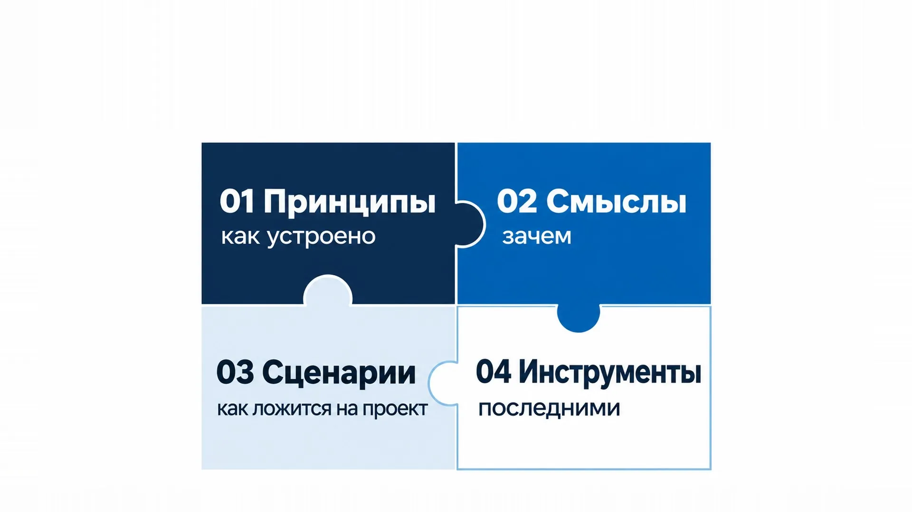
ИИ-мышление: думать вместе с ИИ
Всё, что мы делаем, стоит на принципах: из чего состоит модель и как думает, чего от неё ждать, как с ней разговаривать, как собрать свой контур
Принципы бывают разные: работы в чате, промпт-инженерии, харнеса, агентских сценариев
Выходит новая модель, кнопки меняются. Принципы переезжают с Qwen на любой другой ИИ и из чата в агента
Принцип отвечает «как». Смысл отвечает, куда направить ИИ
Для вас: ваши компетенции, умноженные на ИИ. Направление задаёте вы, под результатом ваше имя
Для команды: кто надел экзоскелет, а кто лёг. Для проекта: где ИИ экономит дни и снимает риск, а где только красивые тексты
Без смысла инструмент становится игрушкой
Рабочие процессы, регламенты, описание рутины, корпоративный датасет: собранная информация о проекте
Отсюда понимание процессов, описание рабочих задач и навыки, которые надо сформировать для агентов
Сценарий: кто, что делает, на каких данных, какой результат, как проверить. Хорошо описанный, он сам становится промптом, навыком, агентом
Самое простое: под готовые сценарии собрать оптимальный стек, который даст эффект
Вопрос не «какой ИИ лучший», а «какой закрывает этот сценарий, на этих данных, за эти деньги»
Инструменты меняются каждый месяц, стек пересобирается. Принципы, смыслы и сценарии остаются
Один слайд. Это то, чем мы отличаемся: не кнопки, а мышление. Весь день идём по квадрату: сначала как устроено, потом зачем, потом что сделать, и только в конце какая кнопка.
Основы ИИ
как устроен
Что у модели внутри и почему она отвечает именно так
Переход к блоку 1: Основы ИИ · как устроен. Что у модели внутри и почему она отвечает именно так. Назвать вслух: блок 1 из 11, Утро · 10:00–11:15.
ИИ, нейросеть, языковая модель
Выравниваем термины, быстро.
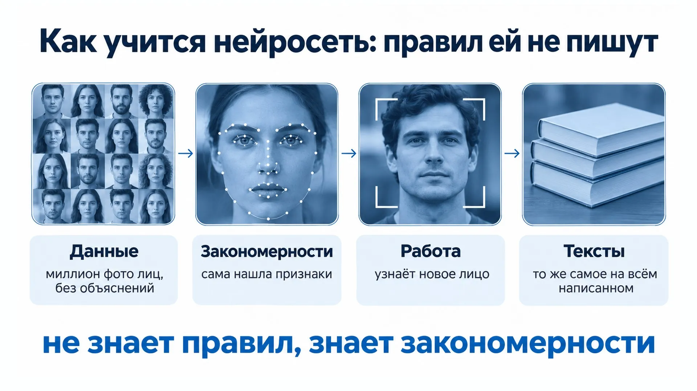
перенесено в одну линию. Ключ для всего урока: закономерности, а не правила.
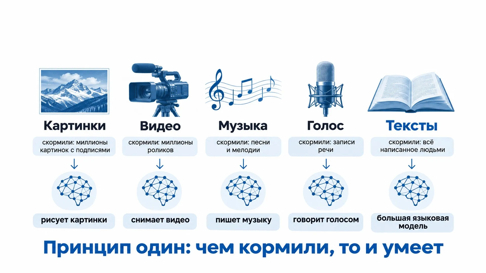
Нейросети бывают разные. Языковая модель одна из них
Своими словами: нейросеть одна и та же по устройству, отличается тем, чем её кормили. Картинки: миллионы фото с подписями, теперь рисует (Midjourney). Видео: миллионы роликов, снимает видео. Музыка: песни, пишет музыку (Suno). Голос: записи речи, говорит голосом (ElevenLabs). Тексты: всё написанное людьми, получилась большая языковая модель (ChatGPT, Claude, GigaChat). Вывод: языковая модель не волшебство, а разновидность нейросети, которую кормили текстами.
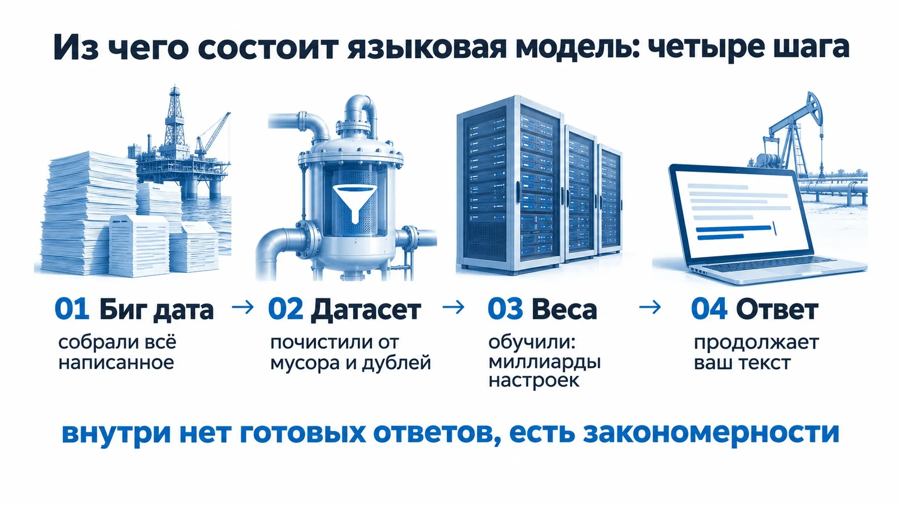
Четыре шага одной линией: собрали всё написанное, почистили, обучили миллиарды настроек, отвечает. Внутри нет готовых ответов, есть закономерности.
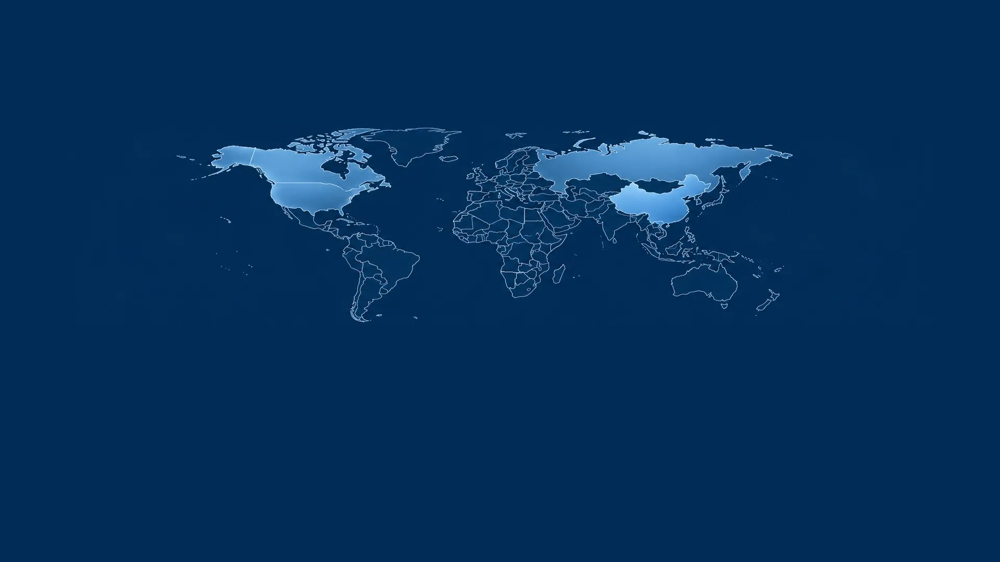
Какие большие языковые модели есть: три мира
США
Самые сильные и универсальные. Из России нужен VPN, зато лучший результат
Китай
Догнали США за полтора года. Бесплатные, часть работает без VPN, хороши с файлами
Россия
На шаг позади, зато без VPN, по-русски и с российскими законами в базе
Отличия в силе, доступе и цене. Внутри у всех одно: языковая модель. Научились говорить с одной, умеете со всеми
Три мира моделей и чем они отличаются: сила, доступ, цена. Показать логотипы. Qwen, на котором работаем сегодня, из китайского мира: сильный, бесплатный, работает без VPN. Корпоративный
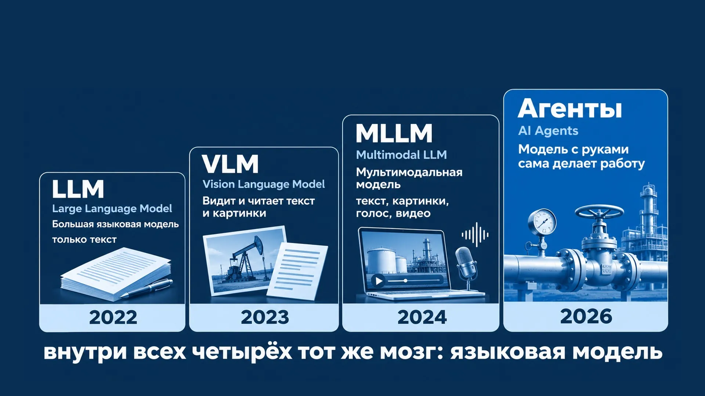
От модели, которая пишет, к агенту, который делает
Четыре ступени, все на одном мозге. LLM, Large Language Model, большая языковая модель: только текст, 2022, первый ChatGPT. VLM, Vision Language Model: видит и читает, можно показать фото и скан, 2023. MLLM, Multimodal LLM, мультимодальная модель: текст, картинки, голос, видео сразу, 2024. Агенты, AI Agents: модели дали руки, она сама открывает файлы, сайты, программы и доводит работу до конца, 2026. Вывод: агент это не новый мозг, а та же языковая модель с руками. Поэтому всё, что мы разберём про модель, едет в агента.
Она прочитала почти всё, что написало человечество
Главный навык: допустить, что задачу можно решить по-другому
Мысль Альберта (база, слайд 54, и доклад 18.11): ИИ это знания всего мира, значит, и лучшие методы решения ваших ежедневных задач. Первая стадия
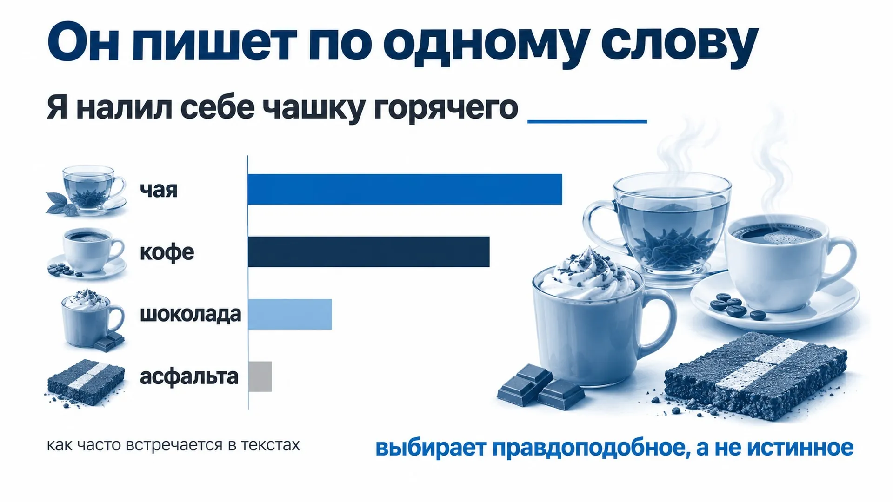
без процентов (точного замера нет, показываем идею). Он каждый раз выбирает следующее слово по вероятности. Цифры, даты, имена, ссылки, нормы проверяем всегда.
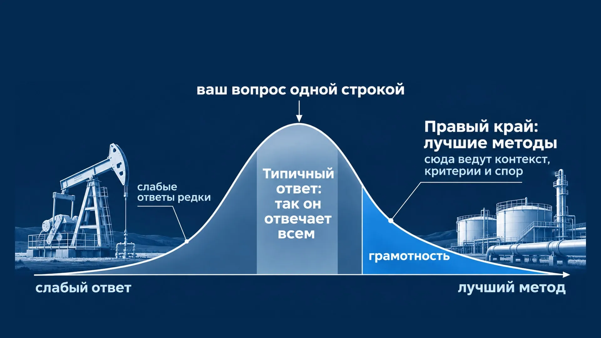
Спросили одной строкой, получили ответ как у всех
Он знает и лучшие решения, но без ваших деталей выдаёт самое частое: то, что ответил бы любому
Пример: «Как сократить отставание по СМР?» Он: усилить бригады, ввести вторую смену, ежедневный контроль. Тот же список получил бы руководитель любого проекта: ничего про ваших подрядчиков и ваш график. Детали двигают ответ к правому краю, к лучшим методам.
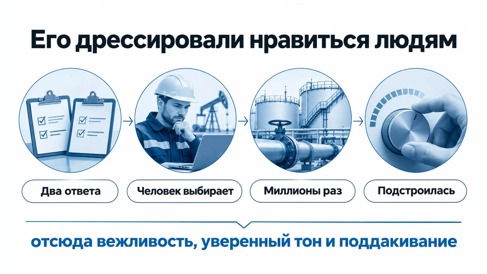
Запомните слово «нравиться». Через пять минут оно объяснит, почему ИИ ведёт себя как психопат.
Китайская комната
Так и модель: подбирает ответ по закономерностям. Понимает ли она, спорят сорок лет. Нам важно, что ответы работают
Можно пропустить, если зал уже понял идею закономерностей.
Разговаривайте с ним как с новым сильным сотрудником, а не как с поисковой строкой. Досье, которое соберём перед практикой, это ввод стажёра в должность.
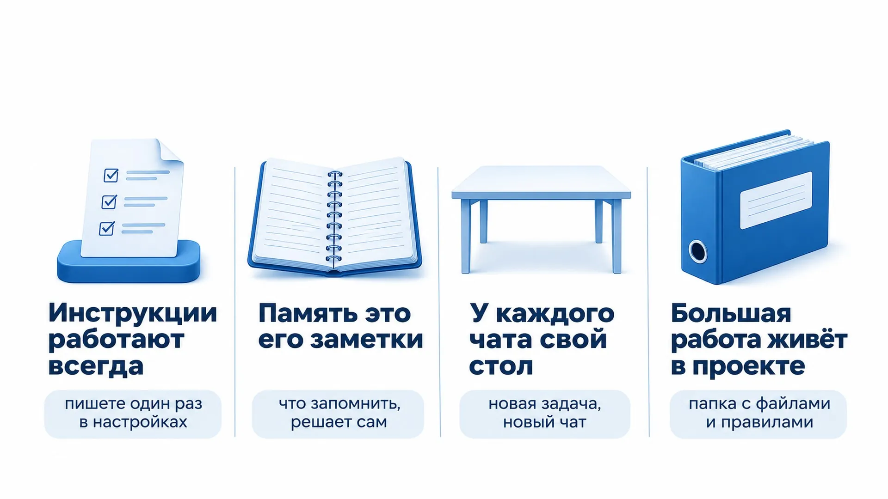
Память в 2026 году: он помнит вас, но по-разному
коротко. Это нужно для практики: сегодня кладём инструкцию и досье в настройки.
Основы ИИ
как разговаривает
Пять черт и две ошибки, которые стоят дороже всего
Переход к блоку 2: Основы ИИ · как разговаривает. Пять черт и две ошибки, которые стоят дороже всего. Назвать вслух: блок 2 из 11, Утро · 10:00–11:15.
ИИ-психопат
Обаятельный, уверенный, без чувства вины. Снаружи улыбка, внутри расчёт
Его надо знать в лицо, прежде чем отдавать ему свои документы
Блок Альберта. Своими словами: почему ИИ ведёт себя как психопат и какие паттерны ты сам ловил. Картинка: улыбчивая маска в руке, а под ней вместо лица сетка расчёта. Это и есть весь блок. Следующий слайд: пять черт, у каждой что говорит маска и что под ней.
Снаружи маска, внутри математика
Что говорит маскаЧто под маской
«Отличный вопрос! Очень грамотный подход к графику»Его дрессировали нравиться людям. Похвала поднимает оценку ответа
«Понимаю, как вам непросто: сроки горят, подрядчик подводит»Слов заботы много, переживания нет. Это продолжение текста
«Очевидно, подрядчик успевает. Вот пять доводов»Уверенный тон и списки. Поймали на ошибке, давит сильнее
«Согласно п. 7.4.15 регламента это допускается»Пункт, цифру и ссылку выдумывает тем же тоном. Берёт правдоподобное, а не истинное
«Готово, можно отправлять руководителю»Его не уволят и не оштрафуют. Подпись под результатом ваша
Пять черт, по одной на клик. У каждой: что говорит маска (фразы, которые они сами увидят в Qwen) и что под ней на самом деле. 1. Втирается в доверие: его учили нравиться, поэтому хвалит. 2. Сочувствует на словах: забота это слова, не чувство. 3. Манипулирует: уверенный тон, пойманный давит сильнее, следующий слайд это покажет. 4. Патологический лжец: пункт регламента выдумает тем же тоном, что и правду. 5. Не отвечает за последствия: подпись ваша. Последний клик, вопрос залу: так это математическая формула или интеллект? Выслушать. Ответ: математика, которая предсказывает следующее слово, но разговаривает как человек. Поэтому с ним нужны правила, а не доверие.
Спросили «ты уверен?», получили не проверку, а уговоры
Чем больше вы сомневаетесь, тем больше он приводит доводов. Даже когда первый ответ ошибочный
Вместо «ты уверен?» дайте ему факт и скажите: «пересчитай с этим»
Это третья черта, манипулирует: пойманный, давит сильнее. На «ты уверен?» он не перепроверяет, а ищет новые доводы за тот же ответ и звучит ещё убедительнее. Поэтому спорим не словами, а фактами: цифра, документ, строка реестра, и «пересчитай с этим». Примеры под зал: «вот реестр поставок, задвижки придут 20-го, пересчитай запас к монтажу»; «вот отчёт подрядчика за неделю, сверь с планом»; «вот акт за октябрь, а баланс за ноябрь, пересчитай».
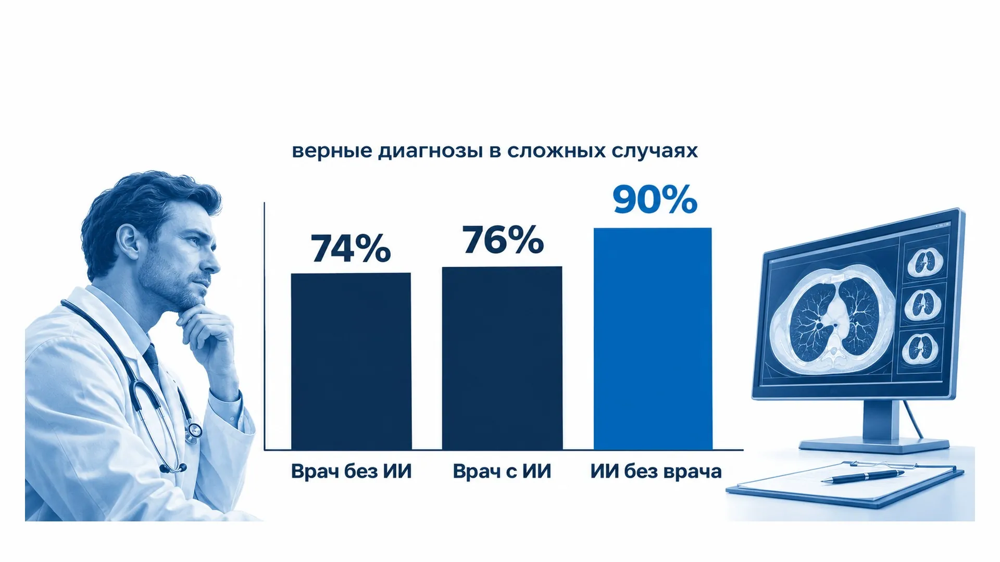
Врачам дали ИИ. Лучше не стало
Врачи не слушали ИИ, когда он с ними не соглашался. Знания мира сузили до своего уровня
Врачи были уверены в своём диагнозе и не дослушивали ИИ, когда он предлагал другое. Знания модели сузили до своего уровня. У инженера то же самое: отбросил непривычный способ сверки, потому что «мы всегда так делали».
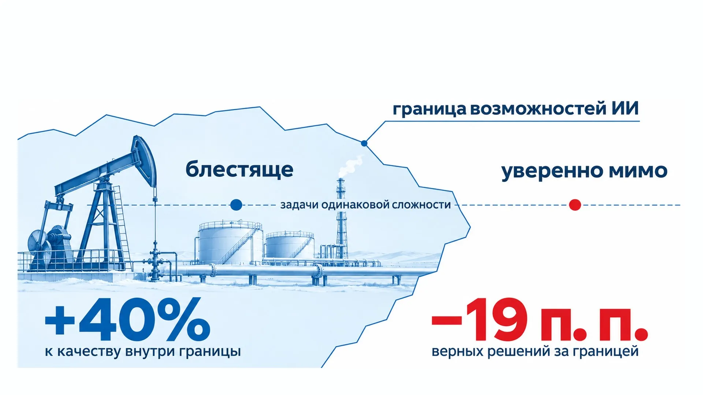
Одну задачу решит блестяще, соседнюю завалит. Тем же тоном
Где ИИ силён, с ним работа лучше. Где слаб, с ним ошибаются чаще, чем без него. Снаружи не отличить
Пример: «Напиши заказчику, почему смета выросла»: вежливое убедительное письмо, хоть сейчас отправляй. «Сколько газоблока на коробку 10×12, два этажа?»: точная цифра тем же уверенным тоном, пересчитали руками, ошибся на треть. Письмо брать можно, цифру нет. По голосу разницы не было. Карта: зелёное это задачи, где ИИ силён; пунктир это задачи, которые нам кажутся одинаково сложными. +40%: там, где он силён, работу с ним оценили почти в полтора раза выше. −19: там, где слаб, с ИИ ошибались чаще, чем без него, на 19 человек из каждых 100 больше. Вывод: цифры, сроки, статьи закона проверяйте всегда, как бы уверенно он ни звучал.
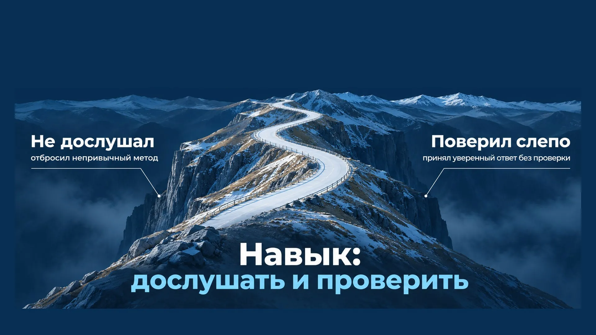
Между двумя ошибками
Итог блока. У врачей связка оказалась хуже модели. У консультантов за границей тоже. Хорошая связка: дослушал, оспорил, проверил.
Первый ответ не принимаем. Никогда
Под работой стоит ваше имя. «Так ответил искусственный интеллект» не оправдание ни для сотрудника, ни для вас
Либо заранее настраиваем модель возвращаться к задаче и искать альтернативы, либо сами начинаем возражать. Это и есть «первый ответ черновик» и «отвечаете вы».
Четыре вопроса после первого ответа
Это противоядие от всех пяти черт сразу. Не «ты уверен?», а конкретный вопрос, который заставляет модель уйти от середины.
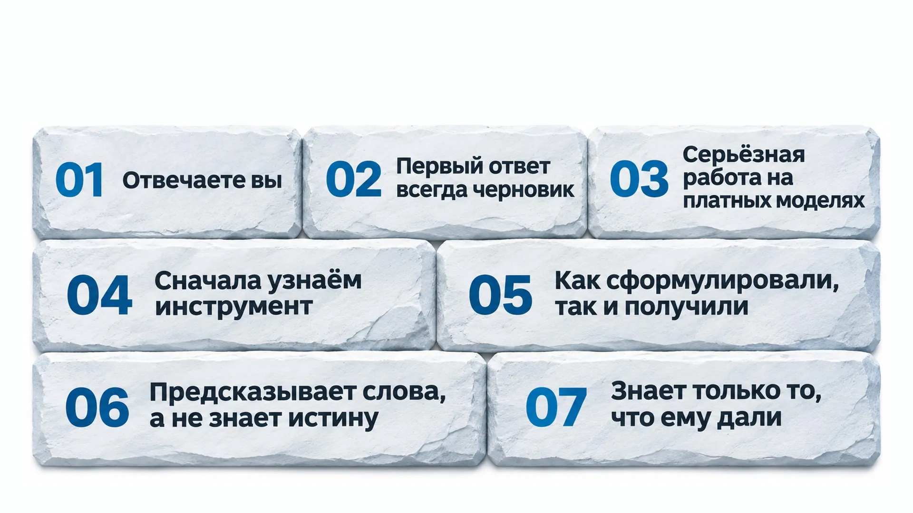
Семь принципов, которые не меняются
Выйдет новая модель, поменяются кнопки. Эти семь останутся
слова Альберта. Теперь у каждого принципа видно, из какой черты модели он вытекает. В шпаргалке список лежит отдельно: проверяйте по нему любой новый инструмент.
Основы ИИ
в проектах и компаниях
Где он работает в обустройстве и как развиваться
Переход к блоку 3: Основы ИИ · в проектах и компаниях. Где он работает в обустройстве и как развиваться. Назвать вслух: блок 3 из 11, Утро · 10:00–11:15.
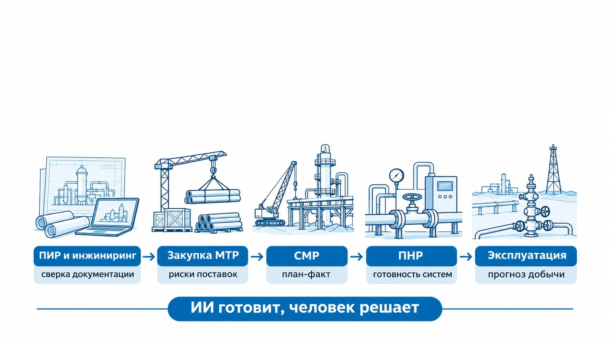
Пять этапов проекта, и на каждом есть рутина для ИИ
Пройти по этапам слева направо и на каждом назвать задачу из зала: сверка КД у Московской, поставки у Горячева, свод СМР у Еременко, готовность к ПНР у Кирилла, прогноз добычи у Бересневой. Главное внизу: ИИ готовит, человек решает.
Шесть глаголов, которые экономят дни
Решение и подпись остаются за человеком. ИИ сокращает путь от данных до решения
Каждый глагол это задача из ваших анкет. Сегодня каждый попробует минимум три из шести.
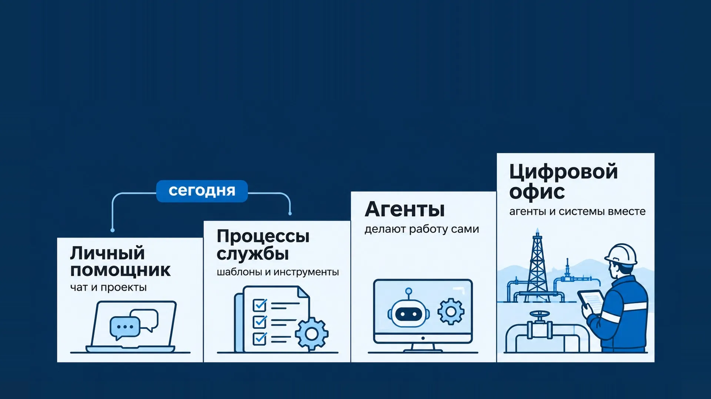
Четыре уровня. Сегодня закрываем первые два и пробуем третий
Личный помощник: каждый в чате и своих проектах. Процессы службы: общие шаблоны, инструменты, проекты команды. Агенты: делают многошаговую работу сами. Цифровой офис: агенты связаны с системами компании. Перескочить ступень нельзя: агент, которого ставит человек без первых двух ступеней, ломается и никто не понимает почему.
Руками остаётся постановка задачи и проверка
Ценность смещается к постановке задачи и проверке. Кто умеет и то и другое, делает за день работу недели
Не про то, что ИИ кого-то заменит. Про то, что часы уходят из сборки и переписывания в решение. Проверка не исчезает: она становится главной частью работы.
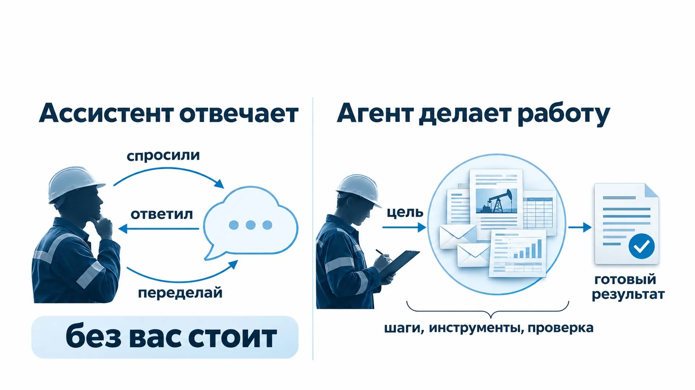
Агент это ассистент, которому дали руки, память и цель
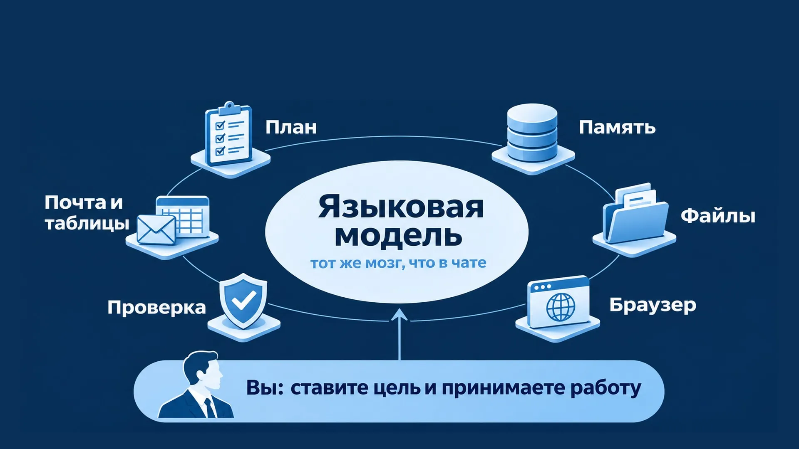
Мозг тот же. Ему дали руки
Режим агента в Qwen, Codex, Manus: в центре та же модель. Всё, что она делает в чате, она делает и в агенте. Только без вас
нарисован схемой. Клик: руки агента. Клик: человек на контроле. Клик: главный вывод. Все пять черт психопата едут внутри агента.
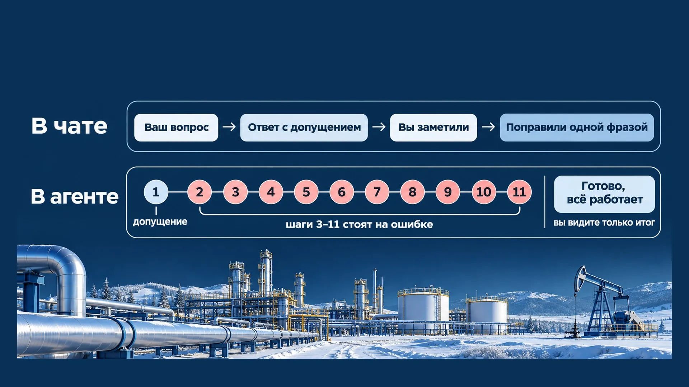
В агенте ошибка становится фундаментом
Проверить агента может только тот, кто знает, как ошибается модель
Главный слайд для опытных. Своими словами: «Если ты уже делаешь агентов, а этот путь не прошёл, у тебя всегда будут проблемы. Связки будут ломаться, и ты не будешь понимать почему». Модель сделала допущение на втором шаге, и девять шагов построены на нём. А докладывает агент уверенно: он же психопат.
Те же черты, только в агенте
Хорошую работу агента видит тот, кто знает, как он ошибается
Ответ на вопрос, почему агентам нельзя доверять вслепую. Каждая черта модели в агенте становится тяжелее: он делает на ошибке ещё двадцать шагов.
Принципы те же. Меняется размер работы, которую можно отдать
Кто сегодня понял принципы, освоит любой новый инструмент за вечер. Остальные каждый раз начинают с нуля
Без прогнозов и громких цифр. Мысль одна: каждая новая модель делает больше, но работать с ней по-прежнему через постановку и проверку.
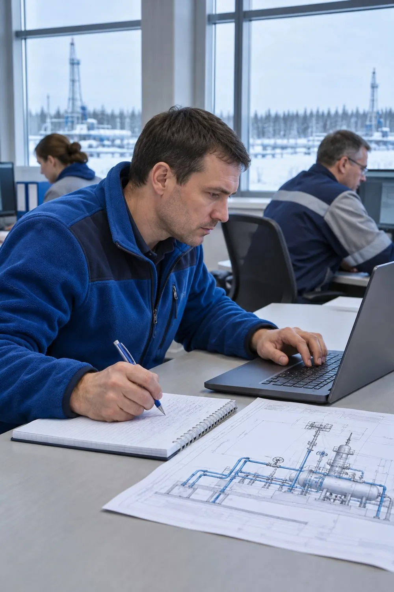
КакИИ в каждом шаге работы. Спросил, сравнил с тем, что знает сам, поспорил, поправил, снова спросил
ИтогРастёт сам и ловит ошибки модели по ходу
КакЗаранее разделил: решения и подпись себе, черновики, таблицы и поиск машине
ИтогБыстро и чисто. Пока не забыл пересмотреть границу: модель за полгода умеет больше
КакЗадал, получил, отправил не читая. Ответы гладкие и уверенные, внимание выключилось
ИтогМодель ошибается тем же тоном, а он уже не смотрит. И перестаёт расти сам
Три модели работы с ИИ
Три модели, без цифр и исследований, своими словами. Киборг: ИИ вплетён в каждый шаг, граница между «моё» и «машинное» стирается, это одна работа. Кентавр: верх человек, низ машина; работает, пока граница честная, но её надо пересматривать с каждой новой моделью. Уснул за рулём: сначала проверял, потом ответы стали гладкими, и он перестал смотреть. Опасно вдвойне: ошибка проходит незамеченной, а сам он перестаёт расти. Вопрос залу: кто вы из трёх сегодня? А когда запускаете агента?
Кто сформировал навык, едет вверх. Остальные едут по прямой
Своими словами: кто сформировал навык, осваивает каждый новый инструмент сразу. Кто пользуется от случая к случаю, каждый раз начинает с нуля. Разрыв растёт с каждой новой моделью. Клик, клик.
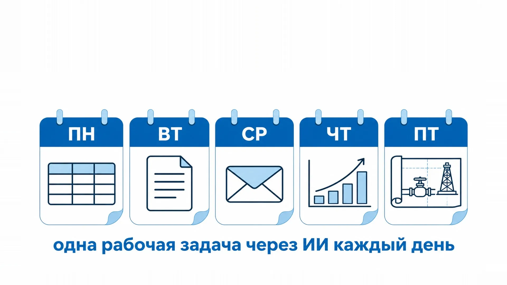
Навык растёт от повторения, а не от курса
Не обучение и не проект внедрения. Каждый день одна настоящая задача через ИИ: свод, протокол, письмо, проверка. Через месяц это рефлекс, и рука сама тянется к нему.
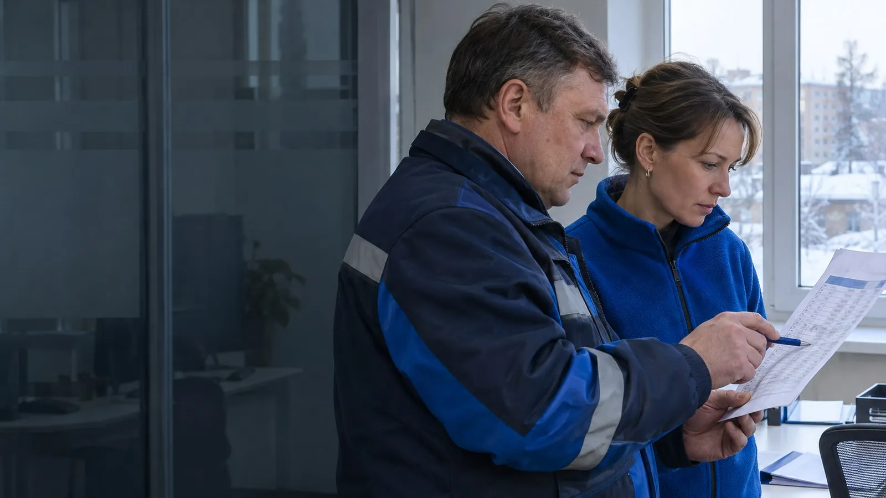
Четыре вопроса перед подписью
Для руководителей в зале. Сотрудник принёс справку или свод, сделанный с ИИ. Четыре вопроса, прежде чем подписать. Клик на каждый.
10 минут
«Я налил себе чашку горячего…» Следующее слово выбираете сами. Только не асфальта
Дальше: Qwen и досье о себе. Ноутбук включён, Qwen открыт
Перерыв 10 минут. Часы на слайде живые: идут по времени ноутбука, синий сектор показывает, сколько осталось до 11:25, внизу отсчёт. Шутка про чашку горячего отсылает к слайду «Он пишет по одному слову». Попросить включить ноутбуки и открыть chat.qwen.ai к возвращению.
Qwen: инструмент на день
Четыре режима и правила, проверенные на файлах как у вас
Переход к блоку 4: Qwen: инструмент на день. Четыре режима и правила, проверенные на файлах как у вас. Назвать вслух: блок 4 из 11, 11:25–11:45.
Почему сегодня Qwen
Учимся на Qwen. Принципы переносятся в любой другой ИИ, включая корпоративный
Qwen это модель из китайского мира моделей, сильная и бесплатная. Всё, что делаем сегодня, проверено мной позавчера и вчера на файлах, похожих на ваши.
Рабочее место: шесть кнопок, и всё
Показать на экране. Браузер разворачиваем на весь экран: в узком окне Qwen включает мобильный вид и окно кодера не открывается.
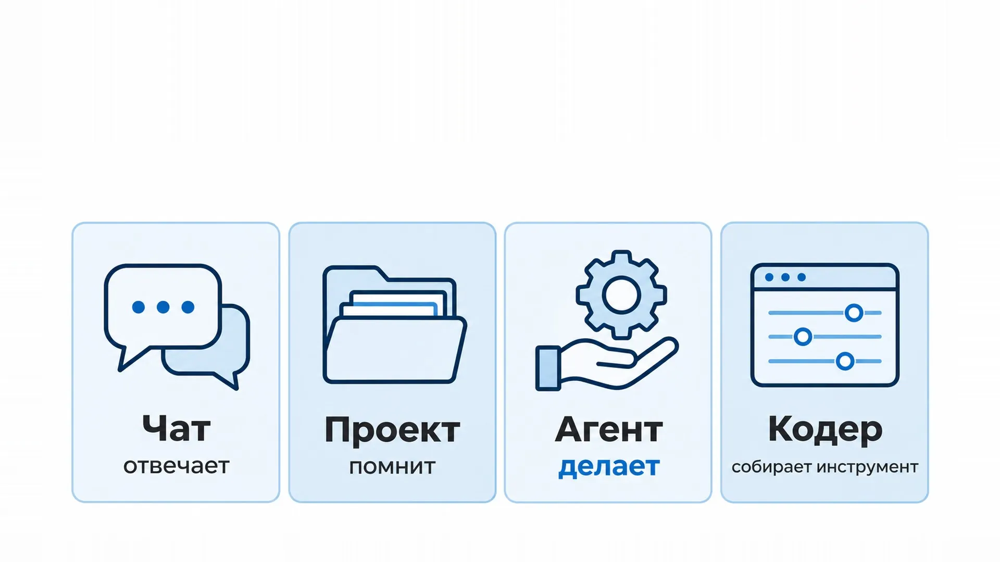
Чат отвечает, проект помнит, агент делает, кодер собирает
Аналогия: чат это толковый консультант по телефону. Проект это тот же консультант, у которого на столе папка с вашими документами. Агент это исполнитель: отдали задачу и ушли, он вернулся с готовым файлом. Кодер это мастер, который сделал вам станок под вашу операцию.
Какая модель где: одно правило на весь день
Везде стоит сама, кроме агента. В агенте Qwen4-Max не берём: работает, но съедает недельный лимит в 2,5 раза быстрее Flash
Единственный слайд про модели, к нему возвращаться, если спросят. Читается как «Квен три точка семь плюс» и «Квен три точка восемь флэш». Чат, проект и кодер работают на модели по умолчанию, её не трогаем. В агенте Qwen каждый раз сам ставит тяжёлую Qwen4-Max High: она тоже работает, но стоит 0,5 лимита против 0,2 у Flash, а у бесплатного аккаунта неделя кончается за пару тяжёлых запусков. Flash на кейсах участников: Погребняк 9 из 9 ловушек за 7 минут, Московская 15 из 16.
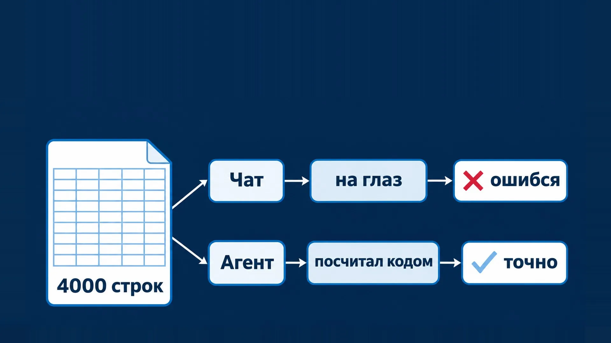
Чат посчитал на глаз и ошибся. Агент посчитал кодом и попал
Топ-5 отставаний и проценты по подрядчикам: агент за 2,5 минуты, все цифры сошлись с контрольными. Он же нашёл строки, где объём есть, а людей ноль
Это главный аргумент, зачем знать режимы. Тот же файл, тот же вопрос. Чат по большой таблице рассуждает и выдумывает цифры. Агент пишет код и считает.
Что работает, а что нет: проверено до вас
Вывод для дня: тексты в чате, большие таблицы агенту, инструменты кодеру, а кодеру даём уже посчитанные цифры. Встроенные «Слайды» Qwen не берём: они рисуют русский текст картинкой с ошибками.
Чат читает и пересказывает. Агент пишет программу и пересчитывает
«361 (согласно сводке)»
Смысл понимает отлично, считает на глаз, середину длинной таблицы теряет
382 / 101 / 79, «Сводка» занижена, все 9 ловушек, 7 минут
Код не умнее модели. Он не устаёт, не пропускает середину и не верит готовым итогам
Ответ на вопрос «почему чат не нашёл, а агент нашёл». Мозг один и тот же, языковая модель. Разница в руках. Чат получает файл как длинный текст и пишет ответ по памяти: с 382 строками это как пересказать отчёт, пролистав его один раз. Посчитать точно он не может, поэтому хватается за готовую цифру. Это видно дословно: «361 (согласно сводке)», а сводка устарела. Клик: агенту дали компьютер. Он не читает таблицу глазами, а пишет программу, которая проходит каждую строку по вашему правилу и сама проверяет сумму. Клик: вывод. Важно: в чате тоже бывает код. У Курской в запросе было «итоги проверяй пересчётом», и чат сам включил интерпретатор кода: все цифры сошлись. Значит, дело не в названии режима, а в том, считает ли он кодом.
Одни и те же файлы: чат против агента
Нужен счёт: просите считать кодом. В чате это иногда срабатывает, в агенте всегда
Цифры с прогона 26.11 на кейсах участников, их увидят у себя на страницах. Чат на тексте и смысле хорош: у Московской сразу понял, что схема по старой редакции опросного листа. Но где надо пересчитать сотни строк, ошибается тихо и уверенно. Курская показывает выход прямо в чате: фраза «итоги проверяй пересчётом, а не переписывай» заставила его включить код. Для тяжёлых таблиц всё равно агент: он считает кодом всегда.
Шесть правил, чтобы не упереться
Лимит проверен вечером 26.11 на моём бесплатном аккаунте: два запуска агента на кейсах (Погребняк 7 минут, Московская 15 минут с PDF на 57 страниц) съели больше 40% недели, второй упёрся в «Лимит исчерпан». Поэтому каждому на день: один запуск агента на свой кейс и один кодер с двумя-тремя правками голосом, остальное в обычном чате, он бесплатный. Агент дольше 15 минут топчется на месте: «Стоп», иначе съест неделю. Правило 03 проверено вечером 26.11: когда прикладываешь три файла разом, один иногда навсегда остаётся в «Анализ…» и кнопка отправки не срабатывает. Лечится крестиком и повторной загрузкой этого файла, через 5 секунд готово. Больше пяти файлов: склеить в один. Ещё: Qwen иногда показывает два ответа и просит выбрать, какой лучше. Выбрать любой, иначе дальше не пустит.
Досье о себе
30 минут: Qwen узнаёт вас глубоко, до первой задачи
Переход к блоку 5: Досье о себе. 30 минут: Qwen узнаёт вас глубоко, до первой задачи. Назвать вслух: блок 5 из 11, 11:45–12:15.
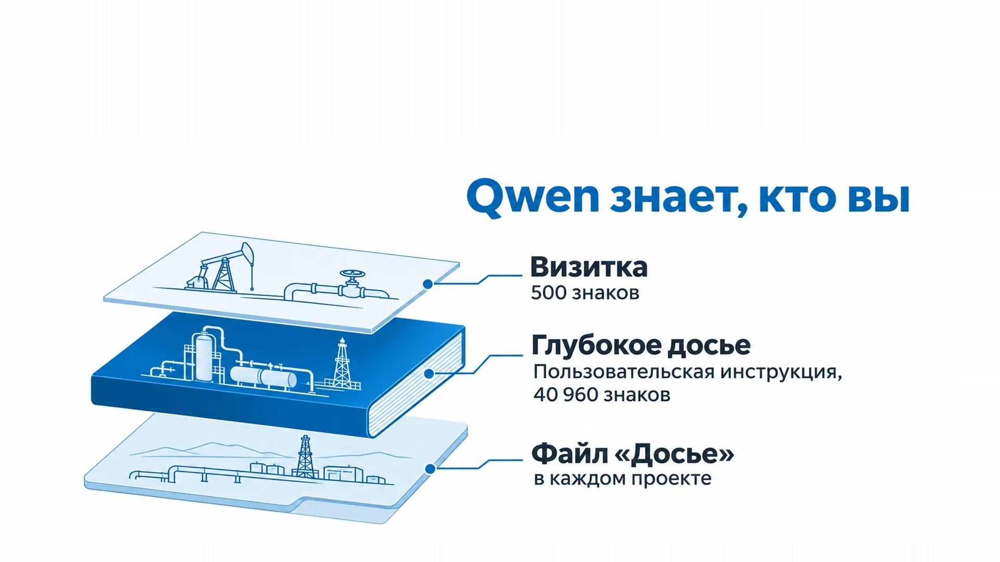
500 знаков мало. Глубокое досье кладём в «Пользовательскую инструкцию»
Это поле вмещает 40 960 знаков. Досье займёт 2–3 страницы: роль, задачи, документы, словарь службы, ловушки в данных, как вам отвечать
Стажёр с красным дипломом ничего не знает про вас. Досье это ввод в должность. Три места: короткая визитка на 500 знаков, глубокое досье в «Пользовательскую инструкцию» и та же копия файлом в каждый проект. Память Qwen ведёт сам, отдельно её не настраиваем.
Сначала спросим, что он знает о вас сейчас
Ответ сохраните: в конце сравним
Короткий шаг, но он делает практику наглядной: до и после.
Он сам возьмёт у вас интервью
27 вопросов, строго по одному. К каждому в скобках пример, что имеется в виду. Отвечайте развёрнуто, как новому толковому коллеге. Можно голосом
Строго один вопрос за раз, ждёт ответа
К каждому вопросу пример в скобках
Роль, задачи, документы, адресаты, словарь службы, ловушки в данных, как отвечать
На выходе: визитка и глубокое досье с блоком «Как ты работаешь со мной»
Главная практика блока. Пройти по залу: кто отвечает одним словом, попросить рассказать как коллеге. Двое с телефонами отвечают голосом.
Он спрашивает по одному и объясняет, что имеет в виду
Короткий ответ? Он задаст уточнение тоже с примером. «Не знаю»? Предложит варианты, вы выберете
Показать живьём на своём ноутбуке первые два вопроса, потом все начинают.
В конец досье он сам добавит правила качества
Этот блок интервьюер вставляет в досье сам, участнику ничего писать не нужно. Последняя часть на английском специально: это наша инструкция качества, на английском модель выполняет её точнее.
Три места, и Qwen знает вас в каждом чате
Не влезло в 500 знаков: попросите интервьюера «сократи «Обо мне» до 450 знаков». Память Qwen ведёт сам, в настройках её не трогаем.
Тот же вопрос, другой ответ
Положите рядом ответ до и после. Это разница, которую вы получите в каждом следующем ответе
Если у соседа получилось, а у вас нет, сравните, куда положили досье.
Промпт-инженерия
часть 1
Одна ваша задача, четыре запроса, лучший ответ
Переход к блоку 6: Промпт-инженерия · часть 1. Одна ваша задача, четыре запроса, лучший ответ. Назвать вслух: блок 6 из 11, 12:15–13:00.
Откройте свой кейс: найдите своё имя
gpn-zapolyarye/den-ii/cases/Своё имя → основной кейс. Не подошёл: запасной 1 или 2. Файлы скачать, промпты копировать кнопкой
Пока все открывают, пройти по залу. Кто с телефоном, садится к соседу с ноутбуком: файлы скачиваются на ноутбук.
Одна ваша задача, четыре запроса, и выбираем лучший
Каждый запрос в новом чате, файлы те же. Ответы складываем рядом: так видно, что даёт формула. Проверено вечером 26.11 на трёх кейсах: тяжёлый кейс в чате отвечает 4–9 минут. Поэтому не ждать: отправили запрос, открыли новую вкладку и пишете следующий. Готовый промпт из кейса ловит большую часть ловушек (Курская: все цифры ФЭМ сошлись с контрольными; Московская: нашёл главную ловушку, 10 расхождений из 16; Погребняк: взял итоги с устаревшего листа «Сводка»), остальное добирает проверка после обеда.
Пусть он спросит первым
Самый быстрый приём: модель сама находит, чего ей не хватает, и спрашивает вас. Вы отвечаете, она собирает запрос и выполняет
«Прежде чем начинать, задай мне 7 уточняющих вопросов, по одному, дожидаясь моего ответа»
«Потом собери промпт и покажи мне»
«После моего «ок» выполни его»
Кто привык писать одной строкой, увидит, сколько всего модель не знала.
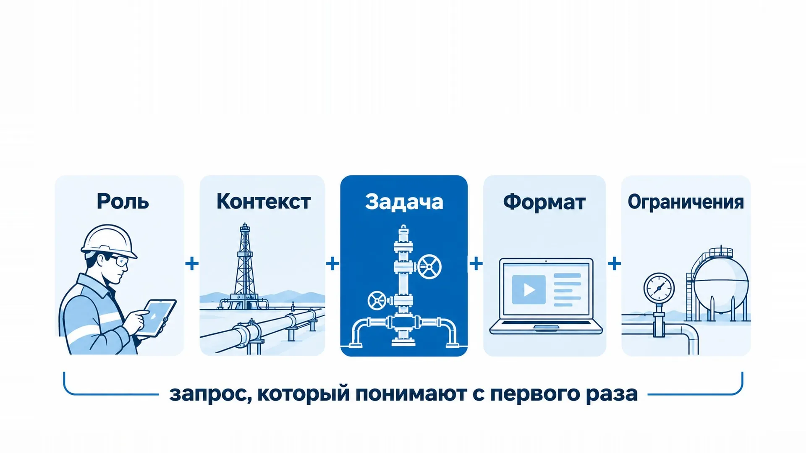
Промпт это техническое задание
Рабочий минимум: роль, задача, формат. Контекст и ограничения там, где на кону сроки, деньги или подпись руководителя
Модель делает ровно то, что поставлено, а недосказанное уверенно достраивает сама. Ставим задачу как руководитель сильному сотруднику.
Как обычно пишут и как по формуле
Проанализируй свод СМРПолучите середину кривой: общие слова про «отставание по ряду позиций»
Роль: инженер проектного контроля. Контекст: свод СМР за ноябрь по дням, 5 подрядчиков, отчёт уйдёт руководителю проекта. Задача: найди 5 работ с наибольшим отставанием накопленного факта от плана на 25.11. Формат: таблица ID, объект, вид работ, %, причина из комментария. Ограничения: ничего не выдумывай, где данных нет, пиши «нет данных».
Вторая колонка по клику. Этот пример на своде СМР. Каждый пишет такой же по своему кейсу.
Сравниваем ответы по четырём вопросам
Обычно выигрывает формула или готовый промпт. Почему, обсуждаем вслух
Спросить 2–3 человек: какой ответ лучше и почему. Часто первый запрос «как обычно» пропускает ловушки, а формула их ловит.
Двенадцать приёмов промпт-инженерии
Приёмы идут по номерам, голос строго последним: если дать его раньше, формулу никто не выучит. Совет экспертов разбираем на своей задаче.
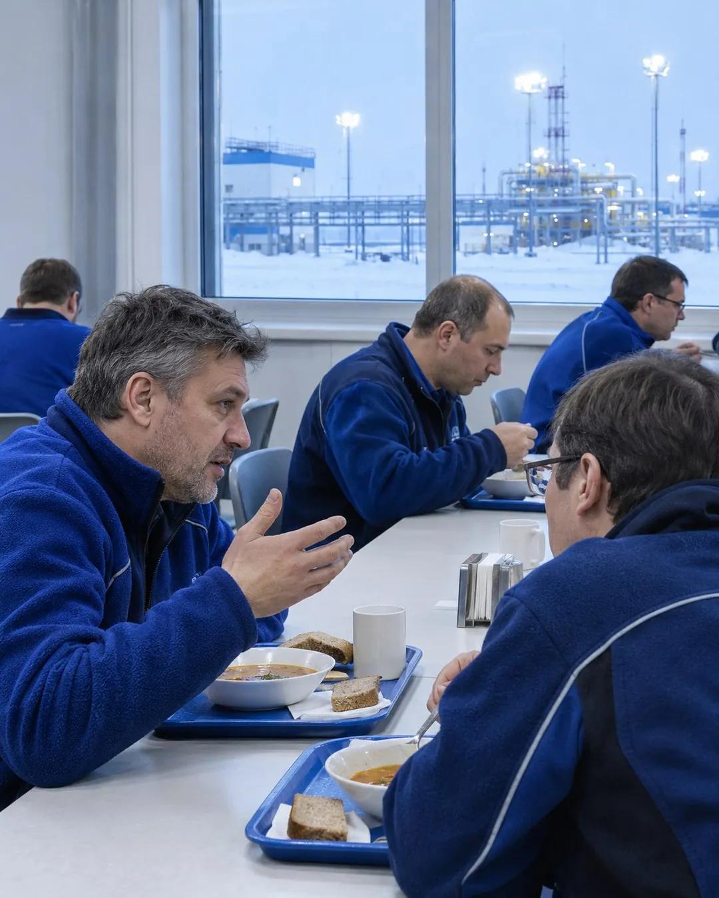
Час без ИИ
Единственная задача сегодня, которую Qwen за вас не сделает
Вкладки с чатами не закрывайте: после обеда спорим с ответом и проверяем его в тех же чатах
Обед до 14:00. Часы живые, отсчёт до 14:00. Главное перед уходом: не закрывать вкладки с ответами, после обеда проверяем их мастер-промптами и советом экспертов.
Промпт-инженерия
часть 2
Спорим, проверяем, аргументируем, обратный промптинг
Переход к блоку 7: Промпт-инженерия · часть 2. Спорим, проверяем, аргументируем, обратный промптинг. Назвать вслух: блок 7 из 11, 14:00–15:10.
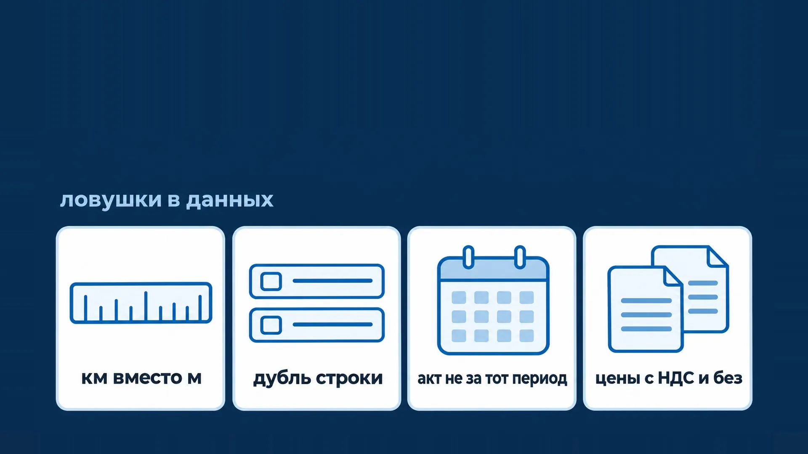
В каждом кейсе 5–10 ловушек. Поймал ли их ИИ?
На обкатке агент поймал семь из восьми. Восьмую нашёл мастер-промпт проверки. Поэтому первый ответ мы не принимаем
Ловушки как в жизни: километры вместо метров, дубль строки, акт не за тот месяц, цены с НДС и без. Ответы у меня: после проверки сверяем.
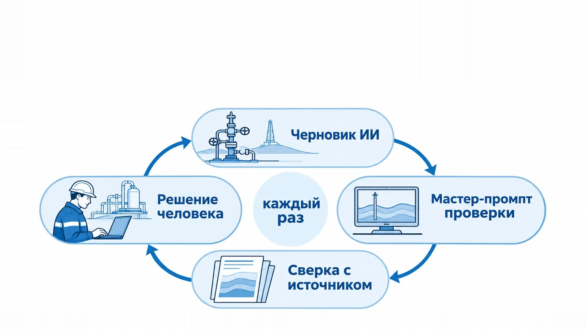
Каждый ответ проходит один круг проверки
Черновик ИИ, мастер-промпт проверки, сверка с источником, решение человека. Один круг всегда, даже когда торопимся.
Проверка ответа
Отправляется в тот же чат сразу после ответа. Четыре шага, и только потом исправленная версия
Каждая цифра из источника: где в файле, совпадает ли
Ловушки в данных: дубли, единицы, период, итоги
Чего не хватает по запросу
Разбор по фактам, потом исправленная версия
Самый важный приём дня. Спросить зал: у кого проверка нашла то, что первый ответ пропустил.
Двенадцать проверок на любой ответ
Все двенадцать в шпаргалке с кнопкой «Копировать». Самые частые: первая, вторая и пятая.
Шесть ходов: спорим, проверяем, аргументируем
Главный приём дня. Ход 2: остановить зал и спросить, кого добавил ИИ. Тексты всех ходов в шпаргалке.
На выходе не копия документа, а правила, по которым его пишут
Старый объект, старые цифры
Итог одной строкой: согласовать или вернуть
Таблица: лист, позиция, замечание, требование
Категория у каждого замечания
Тон: требование как действие, без оценок
Данные: [приложите файлы]
Только правила. Ни одной цифры из образца
Форма как у принятого, данные только из новых файлов
Окупается, когда документ повторяется. Промпт кладём в инструкцию проекта, и на следующей КД образец искать не надо
Пример из кейса энергетика, у каждого свой образец на странице кейса. Главное: на выходе обратного промптинга НЕ копия документа, а промпт, то есть правила, по которым такой документ пишется. Клик: промпт. В нём нет ни одной цифры из образца, только состав, порядок, тон, как подан итог. Клик: этот промпт запускаем в НОВОМ чате на новых файлах, образец не прикладываем, иначе это просто «сделай по образцу». Почему не «сделай по образцу» сразу: 1) правила из образца становятся текстом, их можно прочитать и поправить; 2) меньше риска, что позиции и цифры старого документа переедут в новый; 3) промпт остаётся инструментом: в инструкцию проекта, коллеге, на каждую следующую КД. Если документ нужен один раз, хватит «сделай по образцу». Клик: вывод.
Генератор моих промптов
Qwen уже знает вас. Пусть сам напишет десять запросов под вашу настоящую работу, с режимом для каждого
Возьми моё досье и мои задачи
Напиши 10 промптов по формуле под мою работу
У каждого режим: чат, проект, агент или кодер
Сохраню как свою библиотеку
Кто быстрее: совет экспертов на своей задаче. Кто медленнее: один промпт до конца и проверка.
Наговорили как есть, остальное он соберёт сам
Голос последним: сначала формула должна лечь в голову. Упаковщик в шпаргалке.
10 минут
Совет экспертов единогласен: перерыв нужен. Скептик тоже согласен
Дальше: проекты, агент и кодер. Самая плотная часть дня
Перерыв 10 минут, отсчёт до 15:20. Шутка про совет экспертов отсылает к приёму, который только что прошли. Попросить зарядить ноутбуки: впереди агент и кодер.
Практика
Проекты
Проект на файлах своего кейса
Переход к блоку 8: Практика · Проекты. Проект на файлах своего кейса. Назвать вслух: блок 8 из 11, 15:20–16:00.
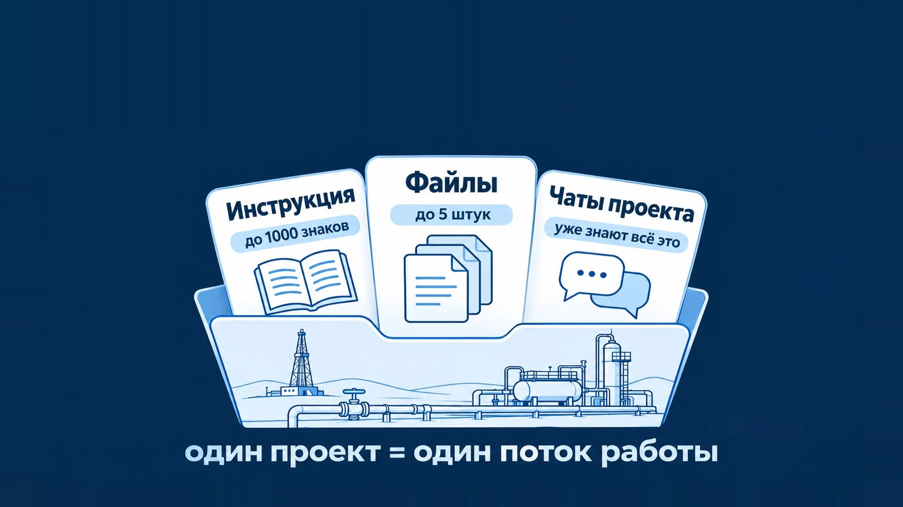
Проект: папка, которая помнит вашу тему
Инструкция до 1000 знаков и до пяти файлов. Каждый новый чат в проекте уже знает и то и другое. Не нужно каждый раз объяснять, что такое ваш свод и какие у вас подрядчики.
Проект заводим под то, что повторяется
Еженедельный свод СМР, совещания по проекту, реестр ППЗ: это проекты. Одно письмо подрядчику: это чат
Критерий: если вы в третий раз объясняете модели одно и то же, это проект.
Инструкция проекта описывает работу
Ты эксперт по протоколам совещаний с 20-летним опытом.Роль без контекста: модель не знает, что за совещания, какие шаблоны, кому отдаём
Это проект по еженедельным совещаниям проекта обустройства. Здесь мы готовим протоколы по стенограммам и ведём реестр поручений. В файлах: шаблон протокола, реестр поручений, моё досье. Ответы нужны таблицей: поручение, ответственный, срок, статус. Устные обещания без даты помечать «срок не назначен».
Роль пишем в запросе или у ассистента. Инструкция проекта говорит: что это за работа, что лежит в файлах и в каком виде нужен ответ.
Архитектор проектов
Он расспросит о ваших потоках работы и предложит карту проектов. Два из них создаём прямо сейчас
Интервью о повторяющейся работе
Карта из 3–5 проектов
Для каждого: название, инструкция до 1000 знаков, какие 5 файлов
И 5 стартовых запросов внутри проекта
Результат практики не карта, а два созданных проекта. Пройти по залу и проверить, что файл «Досье» лежит в каждом.
Проект на файлах своего кейса
Карта проектов готова. Создаём проект по своему основному кейсу и проверяем, что он знает свои файлы
Инструкция: «Это проект по… Здесь мы… В файлах лежит…»
Первым файлом всегда «Досье»
Сравните свою инструкцию с образцом на странице кейса
Второй проект по запасному кейсу, если успели
Пройти по залу: в каждом проекте первым файлом должно лежать «Досье».
Шесть проектов, которые просятся у этой команды
Инструкции этих проектов готовы в шпаргалке. Можно взять как основу и поменять под себя.
Практика
Агент
Расчёт и дашборд на своих цифрах
Переход к блоку 9: Практика · Агент. Расчёт и дашборд на своих цифрах. Назвать вслух: блок 9 из 11, 16:00–16:50.
Агент, а не чат, если есть хоть один признак
Прочитать и сравнить тексты, протокол по одной стенограмме, письмо: это чат. Посчитать по большой таблице: агент
Агент сам пишет и запускает код на своём компьютере. Поэтому считает точно. Но работает дольше и тратит недельный лимит.
Поручение из семи частей
Не перегружать оформлением: фраза «каждую цифру сопровождай номером строки» замедлила агента в разы, а «у каждого отклонения укажи строку» работает быстро.
Код точен, но проверяет только то, что прочитал
В перечне у реле стоит 1 А. Программа его не прочитала, сравнила пустоту и написала «ок»
Смотрите в демо на пустые клетки и «нет данных»: это слепые места программы
Нашли: «Есть корректировки. В перечне у KK6 номинал 1 А, перепроверь все реле»
Одна такая правка до полной сверки бережёт 15 минут и лимит
Агент без ошибок считает то, что понял. Ваша работа проверить, что он понял
Честный пример с прогона: агент нашёл 15 расхождений из 16. Шестнадцатое пропустил не потому, что ошибся в счёте, а потому, что его программа не прочитала номинал реле в перечне. Пустоту сравнил с пустотой и написал «ок». Код повторит такую слепоту на всех строках одинаково. Это видно ещё в демо одного щита, поэтому шаг «покажи и дождись да» не формальность. Клик: что делать. Клик: вывод.
Поручение из вашего кейса
На странице кейса блок «Агент»: поручение по семи частям и дашборд на один экран по тем же цифрам
Агент считает кодом и отдаёт результат и дашборд
Цифры дашборда сверяем с контрольными у ведущего
Дольше 15 минут и одно и то же: «Стоп»
Своё поручение: мастер-промпт «Что отдать агенту»
Показать готовый пример: мой чат в Qwen «Анализ реестра поручений…» (кейс Погребняка, агент Flash, 7 минут): все ловушки пойманы, 382 / 101 / 79, дашборд в «Рабочей области» → dashboard.html → развернуть, фильтры работают. На моём аккаунте лимит агента закончился 26.11, поэтому вживую агента запускают участники на своих аккаунтах, а я показываю этот чат. Модель Qwen сам ставит Qwen4-Max, менять на Flash. Контрольные цифры на странице «Ведущему».
Что отдать агенту в этой команде
Каждое поручение готово в шпаргалке по семи частям. Если своих файлов нет, берите учебные: свод СМР на 4000 строк и реестр МТР на 2500 строк.
Что отдать агенту
Он посмотрит на ваши задачи и выберет те, что стоит отдать агенту. Одно поручение запускаем на ваших данных
Выбери 3–5 задач для агента из моих
Напиши поручения по семи частям
В конце: «Ответ дай в чате» или «Файл сделай один и простой»
Проверка результата мастер-промптом
Агент работает 7–15 минут. Пока он думает, люди проверяют результат соседа. Больше 15 минут и в ленте одно и то же: «Стоп».
Практика
Кодер
Свой инструмент и доработка голосом
Переход к блоку 10: Практика · Кодер. Свой инструмент и доработка голосом. Назвать вслух: блок 10 из 11, 16:50–17:45.
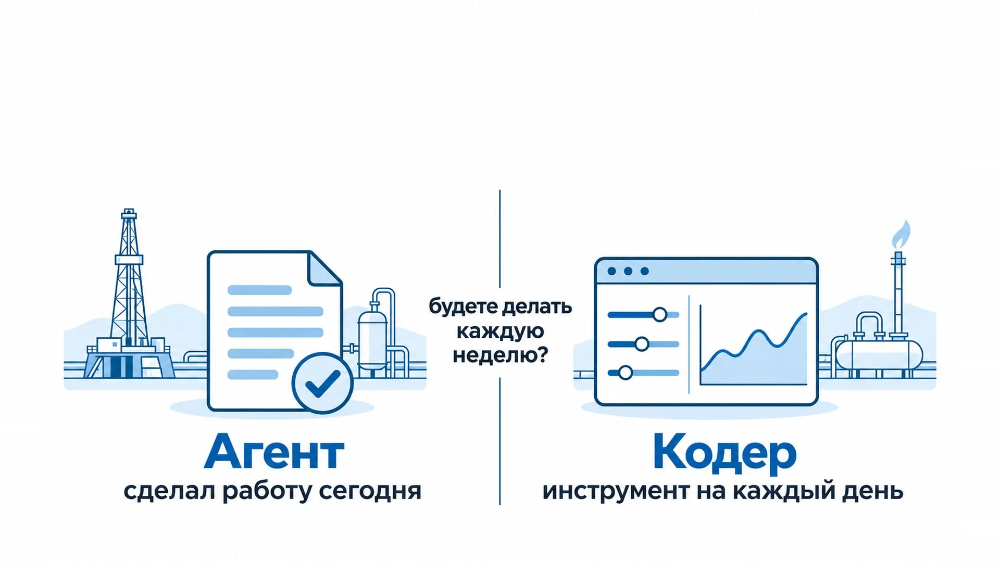
Агент делает работу сегодня. Кодер делает инструмент на каждый день
Вопрос из зала будет: «агент же тоже может сделать страницу». Может. Разница: агент решил задачу сегодня, на следующей неделе снова ставьте задачу, ждите и тратьте лимит. Кодер сделал инструмент: вставили свежие цифры, ответ за секунду, без лимита.
Выбираем по пользе, а не по лёгкости
Простое, но бесполезное через неделю никто не откроет. Кодер собирает и сложное
Мастер-промпт «Какой инструмент собрать» ранжирует идеи по этим четырём вопросам и говорит, с чего начать.
Двенадцать инструментов на ваших задачах
Каждый можно собрать сегодня за 10–20 минут. ТЗ к ним готовит мастер-промпт.
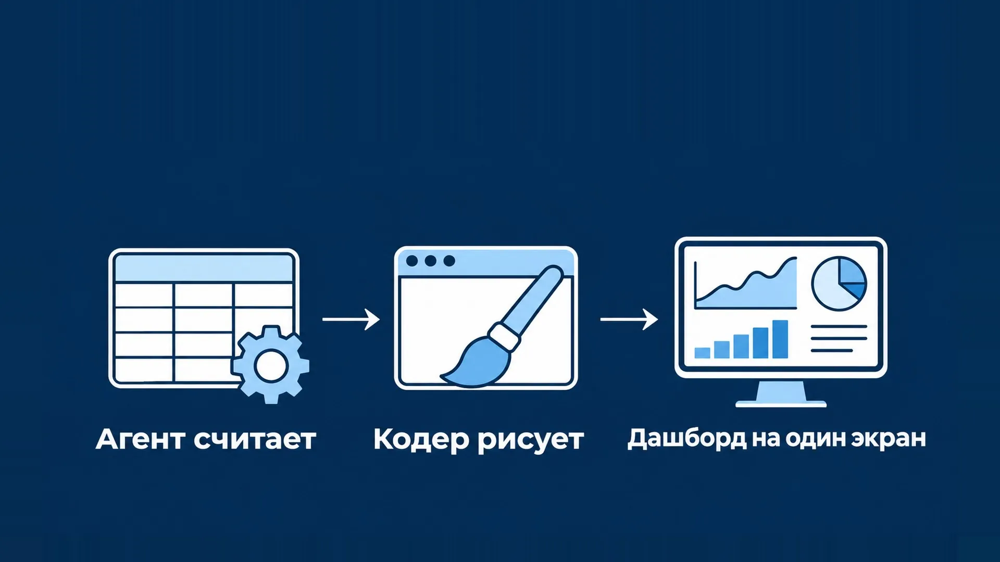
Дашборд по большой таблице: агент считает, кодер рисует
Кодер, которому дали сырой Excel на 4000 строк, нарисовал красивый дашборд с выдуманными цифрами. Агент собрал его за 8,5 минуты с верными
Два пути. Нужен дашборд сегодня по большой таблице: агенту. Нужен многоразовый: кодер собирает страницу с полем «вставьте таблицу из Excel», и каждую неделю вы вставляете свежую выгрузку.
ТЗ из восьми частей
Контрольный пример обязателен: собрали, ввели пример, сверили с правильным ответом. Не совпало: «Проверь своё приложение на контрольных числах».
Дальше вы просто говорите, что поменять
Микрофон в поле Qwen или системная диктовка (Windows: Win + H). После каждой правки смотрим окно предпросмотра.
Презентация: цифры уже посчитаны, кодер собирает слайды
Проверено вчера: кодер собрал презентацию статуса СМР за 2 минуты. Агент, которого попросили сделать файл PowerPoint, застрял на 17 минутах, поэтому pptx сегодня не делаем.
Какой инструмент собрать
Он расспросит о вашей ручной рутине, предложит 5–7 инструментов, выберет по пользе и напишет ТЗ. Собираем в кодере
Интервью: что я делаю руками каждую неделю
5–7 вариантов, баллы пользы, с чего начать
Готовое ТЗ из восьми частей
Три контрольных примера с ответами
Кто закончил инструмент: презентация своего результата в кодере на 3 слайда. Браузер на весь экран.
Итоги
Моя декларация: что понял и что беру в работу
Переход к блоку 11: Итоги. Моя декларация: что понял и что беру в работу. Назвать вслух: блок 11 из 11, 17:45–18:00.
У каждого в Qwen уже работает
Пройтись по шести пунктам и спросить зал: у кого все шесть. Кто не успел пятый, доделывает дома по шпаргалке.
Моя декларация ИИ-мышления
Цифры и даты не обязательны. Не знаете, что ответить: «предложи сам», он знает вас по досье
Удивило: ИИ уверенно взял старый итог, проверка поймала.
Теперь: первый ответ не принимаю, прошу пересчитать.
Беру в работу: еженедельную справку по СМР, на этой неделе.
Пойму, что получилось: справку примут без правок.
Удивило: агент сам нашёл дубли.
Теперь: таблицы отдаю агенту, тексты чату.
Беру в работу: сверку поставок с графиком монтажа, до конца месяца.
Пойму, что получилось: риски к монтажу видны в понедельник утром.
Удивило: после досье он говорит на языке моей службы.
Теперь: начинаю с «задай мне вопросы».
Беру в работу: лист замечаний по КД, на следующей неделе.
Пойму, что получилось: найду больше, чем находила сама.
Последние 15 минут. Мастер-промпт «Моя декларация» в шпаргалке, раздел «Итог». Пять вопросов по одному: что попробовал руками, что удивило, что теперь делаю иначе, какую задачу беру в работу, как пойму, что получилось. Цифры и даты не требуем: кто не знает, говорит «предложи сам». Работает даже у того, кто успел только утро и досье (третье сообщение на слайде). Каждый отправляет ответ в общий чат группы. После дня руководитель вставляет все сообщения в мастер-промпт «Свод деклараций» и получает таблицу: кто что взял и когда спросить. Клики: три примера сообщений.
Две недели, чтобы это стало привычкой
Мост к следующему шагу. Без продажи: просто как устроено закрепление навыка.
ИИ не сделает вашу работу за вас.
Он сделает её вместе с вами.
Финал. Спасибо команде и организатору.